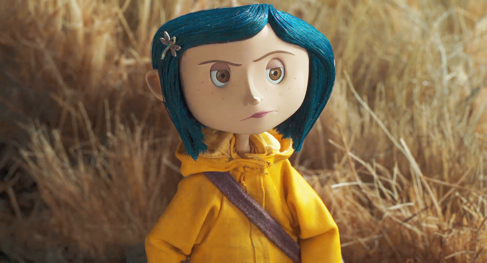
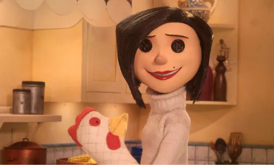
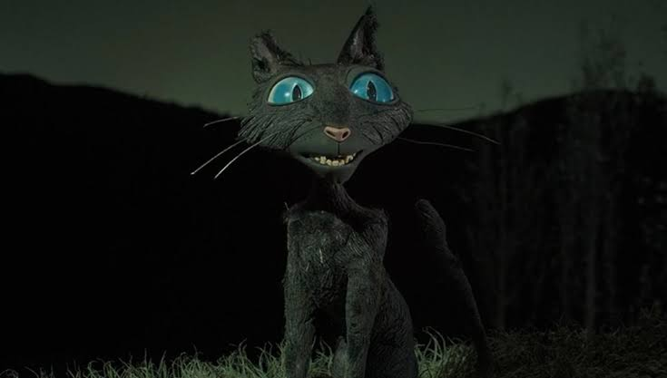
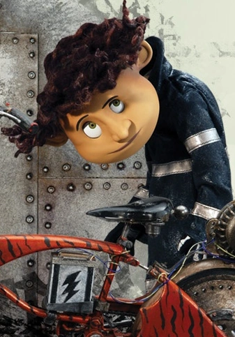

Coraline Jones
Voice: Dakota Fanning
A curious, brave eleven-year-old who moves to a new home and finds a secret door to a world that seems better than her own.

Meet the faces of Coraline.

Voice: Dakota Fanning
A curious, brave eleven-year-old who moves to a new home and finds a secret door to a world that seems better than her own.

Voice: Teri Hatcher
The ruler of the Other World. She looks like the perfect, loving mother, but something darker hides behind her kindness.

Voice: Keith David
A sarcastic, mysterious black cat with no name. He can speak in the Other World and appears and disappears whenever he likes.

Voice: Robert Bailey Jr.
A talkative, nervous boy who lives nearby and is the grandson of Coraline’s landlady. He becomes Coraline’s friend.
Scroll inside the plate to meet everyone ↓